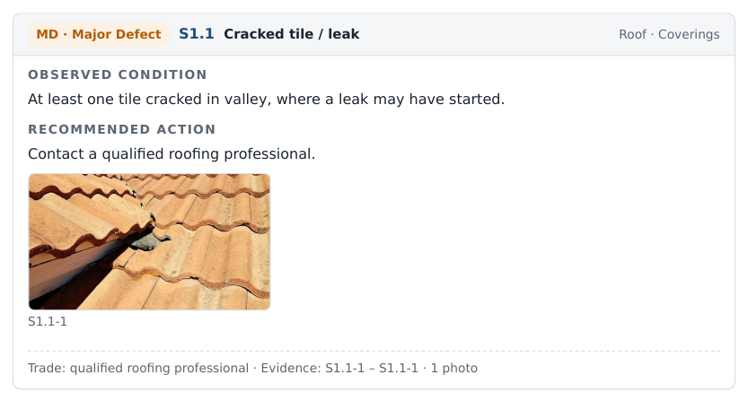

In this pilot, Spex Live is your voice co-inspector in the field: it takes your spoken notes, drafts findings for your approval, and helps prepare the report as you go. Spex answering email, keeping a schedule, and the rest of the office work are not part of this pilot.
The note-taking that comes with an inspection — stopping to type, sorting photos, then rewriting it all into a report at night — is a second job you never applied for. Spex Live takes that job: you talk while you work.

One field. This starts your application — you finish it on the next page. Nothing else is asked here.
Free for 30 days. We move you over from your current software — you don’t fill out a thing.
The pilot is the first 25 inspectors — the same 25 who lock the founding price. We work inspectors in as they come.
Measured against your own starting numbers — how long your reports take you today, written down with you when you start. If your reports don’t take less time on an inspection business Inspyx onboarded, you choose: six months free, or walk away.
Get set up by our team and if your reports don’t take less time in your free trial, you get six months free — or walk away. Your choice. (Self-serve setup isn’t covered — we can only guarantee results we set up and verified ourselves.)
And if you’ve paid us and simply don’t like it, our money-back guarantee stands: ask, and we refund you.
There are 25 because every move-in is done by hand, and every inspector’s starting numbers are written down with them, by a person, before their first inspection. That work is done properly for a small cohort or not at all — so the cohort is 25, and places go in the order applications are read.
When the 25 are claimed, the founding rate is gone — the price after is $84.95 a month.
No places claimed yet. Claims appear here as they happen — state and date only, never names.
Your place in line is yours to watch. Applications are read in the order they arrive, in a weekly review. When you apply, you get a personal status link — your position, how many inspectors are ahead of you and how many applied after you — drawn from this same count, never a separate list.
I’m a truck driver. The software on the market stopped my own start — too expensive, and too difficult to learn — so I built the software myself. And it got me inspecting: I run inspections with Inspyx now — part-time, on my own terms — and I want to share it with the inspectors standing exactly where I was standing.
— Moises Avila, part-time home inspector and founder of Inspyx
Read our story →